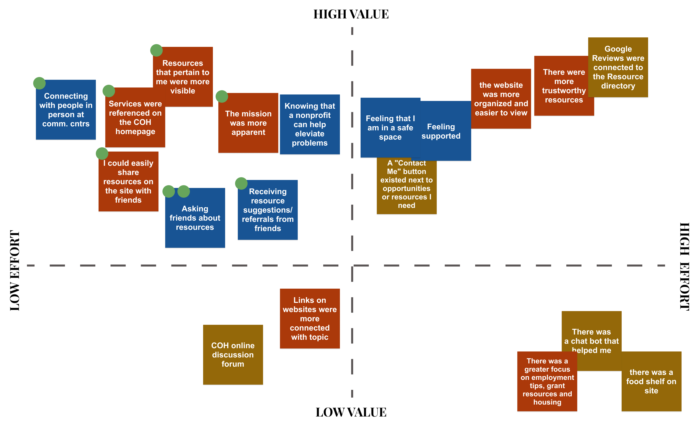

Center on Halsted Website Redesign
About the Project
This project was a part of the Information Architecture and Interaction Design course at University of Minnesota.
Center on Halsted is a community center that offers social and mental health programs for the LGBTQ community of Chicagoland and beyond.
When our team got together and analyzed the nonprofit's website we concluded that the purpose of the organization was unclear and it was difficult to understand what the center can offer to LGBTQ members, and the overall style was outdated. We thought this was a pefect opportunity to redesign the website. The current website suffered from poor usability, navigation glitches, clutter, and overall an outdated design, and this is when we thought that we should come up with a solution to this problem.
The Idea
Our idea was to create a pleasing experience for LGBTQ members looking for resources. We wanted to create a design that helped people feel confident in the resources the Center on Halsted offers.
Tools
Figma, Miro, Adobe Photoshop, Storyboardthat, Trello
Deliverables
User Research (Interviews + Surveys) & Analysis, Stakeholder Interview, Competitor Analysis, Persona Creation, Sitemap, UI Style, Mobile User Experience Design (UI/UX), Interaction Design, Wireframing, Prototyping, In-person User Testing.
My Responsibilites & Team
The Team:
~ Nethra Thenappan - UI/UX Designer
~ John Morson - UI/UX Designer
~ Mike Everett - UI/UX Designer
My Responsibilities:
~ Defining the scope & Strategy + Planning the project
~ Conducting User Research (User Interviews and Surveys), Competitor Analysis, Persona Creation
~ Delivering solutions through UX Design methods and techniques (Sitemap, Interaction Design, Wireframing, Prototyping, User Testing and Visual Design)
Center on Halsted’s Current Website
Center on Halsted’s current website, though extremely informative, is not without its flaws. The website's information architecture requires re-work, interaction states need improvement, the homepage is cluttered and the purpose of the organization is unclear. Furthermore, the website is not web design responsive, and needs a mobile version as well.
The Design Process
We followed a User Centered Design Process.

Step 1: User Research
We first conducted 6 virtual interviews with members of the LBGTQ community to find answers to how we might be able to help simplify the process of finding LGBTQ resources for members of the community.
User Interviews


Affinity Diagram
To better understand our user research interviews we sorted our users’ responses into an affinity diagram.

User Research Analysis
From these interviews, we learned that it is often difficult for members within the community to find mental health experts that meet specific needs. Often, referrals from trusted friends held the biggest when it came to selecting mental or physical health resources, such as a doctor or therapist.
Additionally, when we directed participants to the Center On Halsted's website the majority of individuals felt lost and unsure what the goal of the site is.
Step 2: Define
We took our user research findings to create a persona and defined our problem statement.
Persona Creation
Based on my gathered research data, I formulated the following Persona:
Key Findings
I analyzed my research data and learned the following:

User Insight
A person in the LGBTQ community needs group therapy resources that meet their specific needs because they weren’t able to get enough referrals from trusted friends, due to the pandemic.
During interviews, we discovered that a majority of individuals within the LGBTQ community have difficulty finding resources that meet their specific needs or issues.
Therefore, we believe that LGBTQ people are not finding the kind of resources they need and that we might be able to help if we draw more attention to the range of resources that the Center On Halsted offers.
We might do this by organizing the resources more effectively. Doing this will allow our redesign to assist LGBTQ people feel more confident in finding dependable resources, quickly and easily.
Problem Statement
Center on Halsted was created to advance the community and secure the health and well-being of the LGBTQ community in Chicagoland. We have observed that the current LBGTQ offerings aren’t as visible as they could be, which does not align with the Center on Halsted’s strategic priority of promoting the visibility and relevance of their offerings and frustrates users visiting the site to find resources. How might we improve the Center On Halsted website so that our customers are successful based on the amount of time it takes users to get to their needed resources?
Step 3: Ideation
Our team then discussed the possible solutions to our users’ problems.
Brainstorm
We brainstormed through the I Like, I Wish, What If Method
Feature Prioritization Matrix
After brainstorming, we dot voted as a group and sorted our solutions based on value and effort.
Our Solutions
Based on value and effort the solutions my team and I came up with are the following:

Site Map
Based on our initial observations when users interacted with current website, we knew the informational architecture would need rework. We created 28 cards to be sorted into categories by users and analyzed the results to formulate a draft information architecture in the form of a Site Map:
Step 4: Interaction Design
This step marked the process of implementing our solutions and new informational architecture into a design,
Low-Fidelity Prototype
With our Brainstorming session, we discovered good ideas, to move to the next step, which involved creating quick low-fidelity prototypes. We then designed and built two interactive low-fidelity prototypes, one for mobile devices and another for the desktop. We used Figma to design and built both prototypes.

Prototype Testing
Once our low-fidelity prototypes were ready, we moved to testing our design, which involved users completing tasks and providing their feedback.
The tasks we asked users to perform were the following:

My team performed 7 user tests, where I perfomed 2 of those and asked users to complete the above three tasks on the prototypes,. The users were asked to use the 'think-aloud' method. While they performed these tasks, I observed them and asked questions to gain a deeper understanding of what improvements could be made.
We found that users did not like the organization of the informational architecture. Users were confused between the Health tab and Programs tab. So we iterated on our site map and made the following changes:
High-Fidelity Prototypes
After thorough user testing, we made improvements to the prototypes and then started building the high-fidelity digital prototype. We continued using Figma throughout this prototyping process.
Click on screen to view to interact with prototype!


Reflection
Key Takeaways
Our team was dedicated to looking for a nonprofit whose website needed help. Despite being in three different cities across two zones and with different schedules, we met online every day to work together on this project. We each participated in every part of the project, from analyzing the existing site, to doing competitor anyalyses, to writing and conducting interviews, and designing the final prototypes. We learned that we did well working alone and then coming together, combining our ideas and creations, to make something even better than we had conceived of. In this process, we made countless iterations of many of the steps, feeling truly invested in developing an improved site. Our first ideas were not always our best, and we were always open to the challenges of going back to the drawing board multiple times.
Next Steps
In the interest of time we set aside a few features and ideas which would greatly improve the app and further address the users’ needs. We would like to continue building secondary pages for the mobile and desktop and would like to go deeper on the information architecture. We would also like to incorporate a share feature because we learned from users interviews that users would feel more confident about specific resources if they received their friends' approval. Finally, we would like to share findings with our stakeholder because the CEO mentioned they are looking to start a full redesign of their website. It would be a great opportunity for us if we could collaborate with them during the redesign process.